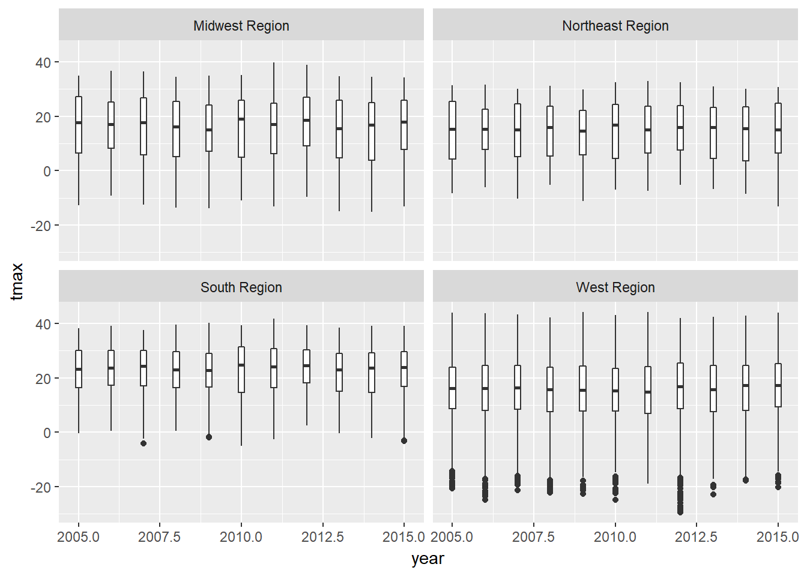
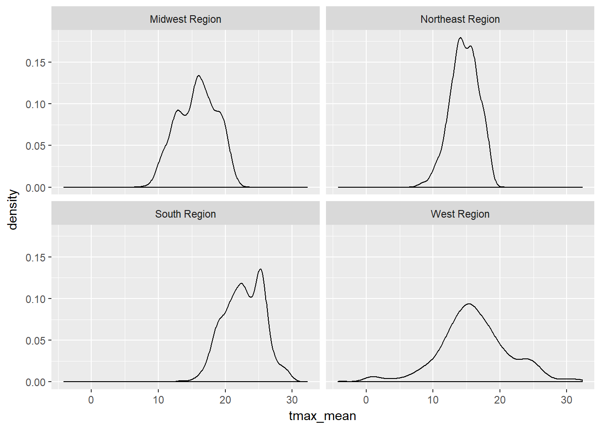

2 Loading data into R, data transformation, and summary statistics
Due: Monday, Sept. 18
Value: 30 points
Overview:
This lab is intended to assess your ability to use R to load data and to generate basic descriptive statistics. You’ll be using monthly weather data from the Daymet climate database (http://daymet.ornl.gov) for all counties in the United States over a 10 year period (2005-2015). These data are available on the Github repo for our course. The following variables are provided:
- gisjn_cty: Code for joining to census data
- year: Year of observation
- month: Month of observation
- dayl: Mean length of daylight (in seconds)
- srad: Mean solar radiation per day
- tmax: Mean maximum recorded temperature (Celsius)
- tmin: Mean minimum recorded temperature (Celsius)
- vap_pres: Mean vapor pressure (indicative of humidity)
- prcp: Total recorded prcpitation (mm)
- cty_name: Name of the county
- state: state of the county
- region: Census region (map: https://www2.census.gov/geo/pdfs/maps-data/maps/reference/us_regdiv.pdf)
- division: Census division
- lon: Longitude of the point
- lat: Latitude of the point
These labs are meant to be done collaboratively, but your final submission should demonstrate your own original thought (don’t just copy your classmate’s work or turn in identical assignments). Your answers to the lab questions should be typed in the provided RMarkdown template and turned in using the Assignment Dropbox on the ELC site.
2.1 Procedure:
Load the tidyverse package and import the data from GitHub:
library(tidyverse)
Daymet_Cty_Summary_2005_2015 <- read_csv("https://github.com/jshannon75/geog4300/raw/master/Labs/Lab%201_%20Descriptive%20stats/Daymet_Cty_Summary_2005_2015.csv")## Parsed with column specification:
## cols(
## gisjn_cty = col_character(),
## year = col_integer(),
## month = col_character(),
## dayl = col_double(),
## srad = col_double(),
## tmax = col_double(),
## tmin = col_double(),
## vap_pres = col_double(),
## prcp = col_integer(),
## CTY_NAME = col_character(),
## State = col_character(),
## Region = col_character(),
## Division = col_character(),
## Lon = col_double(),
## Lat = col_double()
## )After loading the file into R, closely examine each variable.
Question 1 task (4 points): Provide an example of nominal, ordinal, interval, and ratio data within this dataset. Explain why each fits in the level of measurement you chose in a sentence or two . If you cannot find an example for one of these four data types (no nominal variables, for example), given an example of climate data that would fit this type.
2.2 Question 2
There are a lot of observations here, 413,820 to be exact. To get a better grasp on it, we can use group_by and summarise in the tidyverse package. Here’s an example.
Daymet_Cty_Summary_2005_2015 %>%
group_by(Region) %>%
summarise(mean_srad=mean(srad))## # A tibble: 4 x 2
## Region mean_srad
## <chr> <dbl>
## 1 Midwest Region 319.4705
## 2 Northeast Region 312.1818
## 3 South Region 344.1628
## 4 West Region 342.4914This command returns the mean value of solar radiation received by counties in each census region during our study period. You could replace “mean” with “sd” to get a similar summary of standard deviation. You may want to change the new variable name (“mean_srad”) above as well.
Now try a VERY simple model of climate change. Let’s say that 100 years from now, temperatures in these cities will be warmer by exactly 2 degrees Celsius. You can create a new variable showing the projected new minimum temperatures. The command below uses the mutate function from the tidyverse to create a new variable (tmin_new) with values two degrees higher than the old one (tmin). It then uses select to get just our variables of interest.
daymet_climatechg<-Daymet_Cty_Summary_2005_2015 %>%
mutate(tmin_new=tmin+2) %>%
select(Region,tmin,tmin_new)
daymet_climatechg## # A tibble: 413,820 x 3
## Region tmin tmin_new
## <chr> <dbl> <dbl>
## 1 South Region 9.4666667 11.466667
## 2 South Region 22.0322581 24.032258
## 3 South Region 0.1774194 2.177419
## 4 South Region 5.4107143 7.410714
## 5 South Region 3.5483871 5.548387
## 6 South Region 22.0483871 24.048387
## 7 South Region 19.7500000 21.750000
## 8 South Region 5.5645161 7.564516
## 9 South Region 13.6129032 15.612903
## 10 South Region 6.8666667 8.866667
## # ... with 413,810 more rows*Question 2 task (3 points): Calculate the mean and standard deviation for the original minimum temperature variable and a new one two degrees higher, grouping these by each census region as shown above. How do these compare? Explain any similarities or differences you find.
2.3 Question 3
You can also create a table showing summary statistics for each variable. For example, if you wanted to know the mean, median, standard deviation coefficient of variation (CV), and IQR for the tmax variable, you can use group_by and summarise:
daymet_summarystats<-Daymet_Cty_Summary_2005_2015 %>%
group_by(Region) %>%
summarise(tmax_mean=mean(tmax),
tmax_med=median(tmax),
tmax_sd=sd(tmax),
tmax_cv=tmax_sd/tmax_mean,
tmax_iqr=IQR(tmax))
daymet_summarystats## # A tibble: 4 x 6
## Region tmax_mean tmax_med tmax_sd tmax_cv tmax_iqr
## <chr> <dbl> <dbl> <dbl> <dbl> <dbl>
## 1 Midwest Region 15.74354 17.26667 11.236738 0.7137364 19.37500
## 2 Northeast Region 14.64101 15.51613 9.991482 0.6824312 18.10000
## 3 South Region 22.78074 23.75806 8.338996 0.3660547 13.48387
## 4 West Region 16.11225 16.12500 10.504552 0.6519604 16.38602Question 3 task (6 points): Adapting the script above, create a data frame that shows the mean, median, standard deviation, CV, and IQR for the prcp variable. Based on these data, are these data skewed or roughly normal in distribution? Which measures of central tendency and dispersion should you use as a result?
2.4 Questions 4-6
We can also look at variables over time. For instance, we can use facet_wrap with boxplot to see how the distribution of maximum temperatures varies by region:
ggplot(Daymet_Cty_Summary_2005_2015, aes(x=year,y=tmax,group=year))+
geom_boxplot()+
facet_wrap(~Region)
Suppose we are just interested in the median. We would then want to create a dataset where the value of tmax is summarized by each year for each census division. You can do so using the combination of group_by and summarise, similar to the command above.
daymet_summary_region<-Daymet_Cty_Summary_2005_2015 %>%
group_by(Region, year) %>%
summarise(tmax_med=median(tmax))
daymet_summary_region## # A tibble: 44 x 3
## # Groups: Region [?]
## Region year tmax_med
## <chr> <int> <dbl>
## 1 Midwest Region 2005 17.70968
## 2 Midwest Region 2006 17.18333
## 3 Midwest Region 2007 17.77876
## 4 Midwest Region 2008 16.20000
## 5 Midwest Region 2009 15.10000
## 6 Midwest Region 2010 19.03333
## 7 Midwest Region 2011 17.16129
## 8 Midwest Region 2012 18.69677
## 9 Midwest Region 2013 15.48333
## 10 Midwest Region 2014 16.90000
## # ... with 34 more rowsNotice how much smaller this dataset is already. Plot it out using ggplot:
ggplot(daymet_summary_region, aes(x=year,y=tmax_med, group=Region, colour=Region))+
geom_line()
Suppose you wanted to see the distribution of the average maximum temperatures of all counties by region. You can summarise that in this way:
daymet_summary_county <- Daymet_Cty_Summary_2005_2015 %>%
group_by(Region,gisjn_cty) %>%
summarise(tmax_mean=mean(tmax))
daymet_summary_county## # A tibble: 3,135 x 3
## # Groups: Region [?]
## Region gisjn_cty tmax_mean
## <chr> <chr> <dbl>
## 1 Midwest Region G17001 17.10559
## 2 Midwest Region G17003 20.22032
## 3 Midwest Region G17005 18.53646
## 4 Midwest Region G17007 14.33828
## 5 Midwest Region G17009 17.15056
## 6 Midwest Region G17011 15.60495
## 7 Midwest Region G17013 18.11706
## 8 Midwest Region G17015 14.95555
## 9 Midwest Region G17017 17.20915
## 10 Midwest Region G17019 16.70861
## # ... with 3,125 more rowsYou can then create a density plot of these mean values by region, again using facet_wrap to separate them.
ggplot(daymet_summary_county, aes(x=tmax_mean))+geom_density()+facet_wrap(~Region)
We can use the filter command to further specify things, selecting only a single month for comparison over this timeframe.
daymet_july<-Daymet_Cty_Summary_2005_2015 %>%
filter(month=="July")
daymet_july## # A tibble: 34,485 x 15
## gisjn_cty year month dayl srad tmax tmin vap_pres
## <chr> <int> <chr> <dbl> <dbl> <dbl> <dbl> <dbl>
## 1 G01001 2005 July 50045.13 350.2452 31.37097 22.04839 2649.032
## 2 G01001 2006 July 50045.13 386.4774 34.29032 21.54839 2567.742
## 3 G01001 2007 July 50045.13 378.6323 31.96774 21.00000 2122.581
## 4 G01001 2008 July 50045.13 387.9226 33.01613 20.53226 2427.097
## 5 G01001 2009 July 50045.13 370.8903 31.45161 20.03226 2352.258
## 6 G01001 2010 July 50045.13 382.7613 34.37097 22.40323 2710.968
## 7 G01001 2011 July 50045.13 349.2129 33.25806 21.88710 2600.000
## 8 G01001 2012 July 50045.13 370.0645 33.83871 21.51613 2565.161
## 9 G01001 2013 July 50045.13 337.9613 30.04839 20.80645 2454.194
## 10 G01001 2014 July 50045.13 398.9677 31.70968 20.29032 2393.548
## # ... with 34,475 more rows, and 7 more variables: prcp <int>,
## # CTY_NAME <chr>, State <chr>, Region <chr>, Division <chr>, Lon <dbl>,
## # Lat <dbl>Question 4 task (3 points): Adapt the above command to create a new data frame, changing “July” to a month of your choosing and using tmin (rather than tmax) as your variable of interest. You should also be sure to keep the region and year variables for use in question 5. You’ll need two commands–one to create the data frame and another to “call” it, just like you see above.
Question 5 task (9 points): With your subsetted data, create the three graphs below using the graphs listed earlier as a guide. You may need to further transform the data in order to make each graph.
- Create a box plot showing the value distribution for tmin in each of the four regions over all 10 years.
- Create a line chart showing the median value of tmin for each region over all 10 years.
- Create a faceted density plot like the one above showing the distribution of median minimum temperatures for all regions.
Don’t worry about things like column names or customization for now—these will be addressed in lab 2.
Question 6 task (5 points): Each of the three graphics you created above tells a particular story about the data. What does each of these graphics tell us about the data? How do they differ from one another in what they communicate? Use details to illustrate your points.